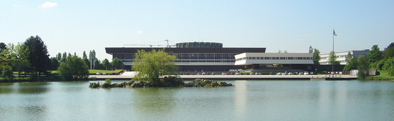
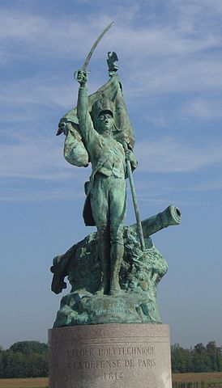

Second International Workshop on
Methods and Tools for Distributed Hybrid Systems
Palaiseau, France, 4 July 2018

About
The purpose of DHS is to connect researchers working in real-time systems, hybrid systems, control theory, distributed computing, and concurrency theory, in order to advance the subject of distributed hybrid systems.

The first DHS workshop was held in Aalborg, Denmark, in August 2017, featuring invited talks by Alessandro Abate, Martin Fränzle, Kim G. Larsen, Martin Raussen, and Rafael Wisniewski. This second edition aims to continue the conversation.
Invited Talks
- Luc Jaulin, ENSTA Bretagne, Brest, France
Distributed localization and control of underwater robots
- Thao Dang, Verimag, Grenoble, France
Invariance and stability verification of hybrid systems
- Lisbeth Fajstrup, Aalborg University, Denmark
Symmetries in the PV-model and of directed invariants
- Emmanuel Ledinot, Dassault Aviation, France
Towards CPS certification reformation: call for effective foundations
- André Platzer, Carnegie Mellon University, United States
Logic of distributed hybrid systems
Venue
DHS 2018 will take place at LIX, the Computer science lab of École polytechnique, in Palaiseau, 20 km south of Paris and easily accessible from Paris by public transportation.
From Paris, the standard way to reach École polytechnique is to take the RER B to the station Massy-Palaiseau and then take a bus 91.06C to the station Polytechnique laboratoires. The bus stop at Massy-Palaiseau is located to the left of the train station (the RER B side), the second-to-last bus stop when walking away from Paris. The following Google map shows important locations.
Once at the lab, ring the bell and head to the reception to the right.
The following link to the RATP web site gives instructions for reaching our lab from the Denfert-Rochereau station in Paris.
Registration
Registration to DHS 2018 is now closed.
Program (tentative; click on the titles to see abstracts)
| Wednesday 4 July |
| 8:30 |
Registration opens |
| 9:00 |
Welcome |
| 9:10 |
Lisbeth Fajstrup |
Invited talk: Symmetries in the PV-model and of directed invariants
Symmetry considerations may reveal equivalences and hence possible reduction of the number of different cases to be studied for e.g. verification. The setting here is the PV-model in a geometric version, where executions are time directed paths and equivalence of executions correspond to deformation of such directed paths. In the PV-model, certainly loops provide a kind of symmetry, but the focus here is different: Copies of the same thread run in parallel with itself without control of the number N of copies gives rise to different symmetry questions and also partial results than the symmetry arising from loops, where copies of (part of) a string are run sequentially. Some results are presented in this setting - cut off for the number, N, of copies needed to ensure deadlock freedom; and also such cut offs for studying equivalence classes of executions. Another symmetry, time reversal, certainly changes some properties - for instance deadlocks become unreachable states. Other features are preserved - the execution paths from a to b correspond to execution paths from b to a under time reversal. Hence, if pairs of points are used as the basic objects, and the connections are through (a,b) to (a',b') is a pair of directed paths a' to a and b b' often time reversal is an equivalence. (The latter is joint work with Kathryn Hess, EPFL Lausanne.)
Questions to the distributed and hybrid community may be: The space in which these directed paths run, is in most cases a cube with a set of hyper rectangles removed, and the time direction is that each coordinate to be non decreasing. How do these models and results change if e.g. paths are smooth and the time direction is defined though cones on the tangent space? if obstacles are not rectangular? if the space is a manifold?
|
| 10:00 |
Break |
| 10:20 |
Luc Jaulin |
Invited talk: Distributed localization and control of underwater robots
We consider the problem of localizing a group of underwater robots and to control the group in order to accomplish a survey. We assume here that
- When a robot surfaces, it can use the GPS for its localization
- The robots can communicate with a very low symbol rate
- The robots can measure their distances with a given accuracy, but not the direction of arrival
- Some outliers on the distances could occur, but their numbers is limited
I will propose a Lagrangian approach based on interval analysis and constraint propagation. It is based on the notion of 'tubes' which are intervals of trajectories and can easily be distributed. Some test-cases will be presented in order to illustrate the efficiency of the approach. Moreover an actual experiment involving actual underwater robots will be shown.
|
| 11:10 |
H. Nguyen Van, T. Balabonski, F. Boulanger, C. Keller, B. Valiron, B. Wolff |
A symbolic operational semantics for TESL
TESL addresses the specification of the temporal aspects of an
architectural composition language that allows the composition of
timed subsystems. TESL specifies the synchronization points between
events and time scales. Methodologically, subsystems having
potentially different models of execution are abstracted to their
interfaces expressed in terms of timed events.
We present an operational semantics of TESL for
constructing symbolic traces that can be used in an online-test scenario:
the symbolic trace containing a set of constraints over time-stamps and
occurrences of events is matched against concrete runs of
the system.
We present the operational rules for building symbolic traces and
illustrate them with examples. Finally, we show a prototype implementation
that generates symbolic traces, and its use for testing.
|
| 11:35 |
J. Dubut |
Trees in partial Higher Dimensional Automata
We give a new definition of partial Higher Dimension Automata (pHDA for short)
using lax functors. This definition is simpler and more natural from a categorical point of view,
but also matches more clearly the intuition that pHDA are Higher Dimensional Automata (HDA
for short) with some missing faces. We then focus on trees. Originally, for example in transition
systems, trees are defined as those systems that have a unique path property. To understand
what kind of unique property is needed in pHDA, we start by looking at trees as colimits of paths.
This definition tells us that trees are exactly the pHDA with the unique path property modulo a
notion of homotopy, and without any shortcuts. This property allows us to prove two interesting
characterisations of trees: trees are exactly those pHDA that are an unfolding of another pHDA;
trees are exactly the cofibrant objects, much as in the language of Quillen’s model structure. In
particular, this last characterisation gives the premisses of a new understanding of concurrency
theory using homotopy theory.
|
| 12:00 |
Lunch |
| 13:30 |
Emmanuel Ledinot |
Invited talk: Towards CPS certification reformation: call for effective foundations
Motivated by the undergoing certification reformation attempt in civil aviation, this talk will review four problems that are open from the industrial standpoint and under investigation by the hybrid system research community: contract abstraction and refinement, combinatorial structure of CPS behavioral spaces, timed-behavioral abstractions, and correctness of distributed control.
Contract-based hybrid system engineering is gaining acceptance in industry as the most promising approach to lean certification (i.e more product-oriented and safety-case oriented), and to incremental certification in particular.
Topological methods open interesting perspectives to lift structural and behavioral coverage analysis at system level. Difficult at software level where test-equivalence classes are mentioned in textbooks but hardly used in practice, behavioral coverage analysis is just inconceivable at system level, as of today in industry.
However, in addition to requirement coverage analysis which is standard through traceability, effective system behavioral coverage analysis (i.e tool-supported, scalable and qualified) would open key additional perspectives to streamline certification: it would be a pivotal enabler to depart from "the smaller, the safer" assurance principle.
This implementation minimization principle, whose soundness is not disputed here, has severe economic consequences. It conflicts with reuse of partially fit-for-purpose Components Off the Shelf (COTS).
Sound timed abstraction of CPS models would be helpful for many dysfunctional combinatorial analyses, in particular for model-based safety assessment where hand-written Boolean functions or Boolean sequential processes are the industrial state of the art.
Last but not least, generalized-control functions mapped on systems of systems have recently put emphasis on the need for formal verification of distributed control functions potentially disturbed by fluctuating communication delays or multi-system wide FDIR switches.
The talk will conclude on European industry-academia collaboration perspectives on these topics in the coming years.
|
| 14:20 |
André Platzer |
Invited talk: Logic of distributed hybrid systems
This talk addresses a fundamental mismatch between the combinations of dynamics that occur in cyber-physical systems and the limited kinds of dynamics supported in analysis. Modern applications combine communication, computation, and control. They may even form dynamic distributed networks, where neither structure nor dimension stay the same while the system follows hybrid dynamics, i.e., mixed discrete and continuous dynamics.
We provide the logical foundations for closing this analytic gap. We develop a formal model for distributed hybrid systems. It combines quantified differential equations with quantified assignments and dynamic dimensionality-changes. We introduce a dynamic logic for verifying distributed hybrid systems and present a proof calculus for this logic. This is the first formal verification approach for distributed hybrid systems. We prove that our calculus is a sound and complete axiomatization of the behavior of distributed hybrid systems relative to quantified differential equations. The talk will also survey the use of this logic in verifying distributed car control, robot obstacle avoidance, distributed aircraft controllers, and a surgical robot.
|
| 15:10 |
A. Le Coënt |
Guaranteed control synthesis for switched systems in Uppaal Tiga
The goal of this work is to introduce new approaches for the synthesis of correct-by-
construction control strategies for continuous-time switched systems, based on the syn-
thesis tool Uppaal Tiga. Switched systems constitute a sub-class of hybrid systems,
and the synthesis problem for such systems is still an important issue, particularly when
considering safety critical systems.
Control synthesis for switched systems has been extensively studied in the past years.
One of the current major approaches is symbolic methods, which basically aim at represent-
ing the continuous and infinite state-space of the system with a finite number of symbols,
e.g. discrete points, sets of states, etc. This type of approaches is particularly
adapted for safety critical systems, since it exhaustively ensures that an interest set is safe.
However, their computational complexity is usually exponential with the dimension of the
system and the fineness of the discretisation.
We present some recent results and ongoing work allowing to overcome some of the flaws
of the current symbolic methods, relying on guaranteed numerical schemes, abstraction
methods and compositional approaches.
Joint work with Kim G. Larsen, Jakob H. Taankvist,
Marco Muñiz, and Peter G. Jensen
|
| 15:35 |
Break |
| 16:00 |
S. Feo Arenis, B. Westphal |
Code-generation for distributed real-time systems
Generating code from networks of timed automata is a well-researched topic
with many proposed approaches, which have in common that they not only
generate code for the processes in the network, but necessarily generate
additional code for a global scheduler which implements the timed automata
semantics. For distributed systems without shared-memory, this additional
component is in general undesired.
In this work, we present a new approach to the generation of correct code for
distributed systems without global scheduler code if the model does not depend
on central scheduling. To this end, we characterise a sub-language of timed
automata with implementation-oriented pragmatics. We address timing aspects
of target platforms by the notion of time-safety wrt. execution time
functions, study time-safety using a physical model, and give a code
generation scheme for automata from the sub-language.
|
| 16:25 |
M. Fränzle, P. Kröger |
The Demon, the Gambler, and the Engineer: Reconciling hybrid-system theory with metrology
Hybrid discrete-continuous system dynamics arises when discrete actions, e.g. by a decision algorithm, meet continuous behaviour,
e.g. due to physical processes and continuous control. Various flavours
of hybrid automata have been suggested as a means to formally analyse
such dynamical systems, among them deterministic automata models
facilitating reasoning about their normative behaviour, nondeterministic
automata under a demonic interpretation supporting worst-case analysis,
and stochastic variants enabling quantitative verification.
We demonstrate that all these variants provide imprecise, in the sense of
either overly pessimistic or overly optimistic, verdicts for engineered systems operating under uncertain observation of their environment due to,
e.g., measurement error. We argue that even the most elaborate models of
hybrid automata currently available ignore wisdom from metrology and
game theory concerning environmental state estimation to be pursued
by a rational player, which a control system obviously ought to constitute. We consequently suggest a revised formal model, called Bayesian
hybrid automata, that is able to represent state tracking and estimation
in hybrid systems and thereby enhances precision of verdicts obtained
from the model.
|
| 16:50 |
Thao Dang |
Invited talk: Invariance and stability verification of hybrid systems
Hybrid systems are widely recognized as appropriate for modelling embedded and cyber-physical systems. While reachability analysis has been used for verifying safety properties, in this work we show how reachable set computation can be used for invariance and stability properties. In particular we introduce a new set representation, called complex zonotopes, which can be seen as an extension of usual real-valued zonotopes to the complex domain and allow us to exploit eigen-structures of the dynamics in order to better capture contractive evolution. Using a number of benchmarks of hybrid systems, we also demonstrate the effectiveness of our invariance and stability algorithms.
|
| 17:40 |
DHS ends |
| |
| 19:30 |
Informal workshop dinner in Paris, Crêperie La Belle Ronde |
| |
Workshop Dinner
The evening of the workshop, at 19:30, we will have an informal workshop dinner in Paris, at the Crêperie La Belle Ronde. The address is 19 rue Daguerre, in the back yard, close to Denfert-Rochereau.

dhs-2018@lists.gforge.inria.fr